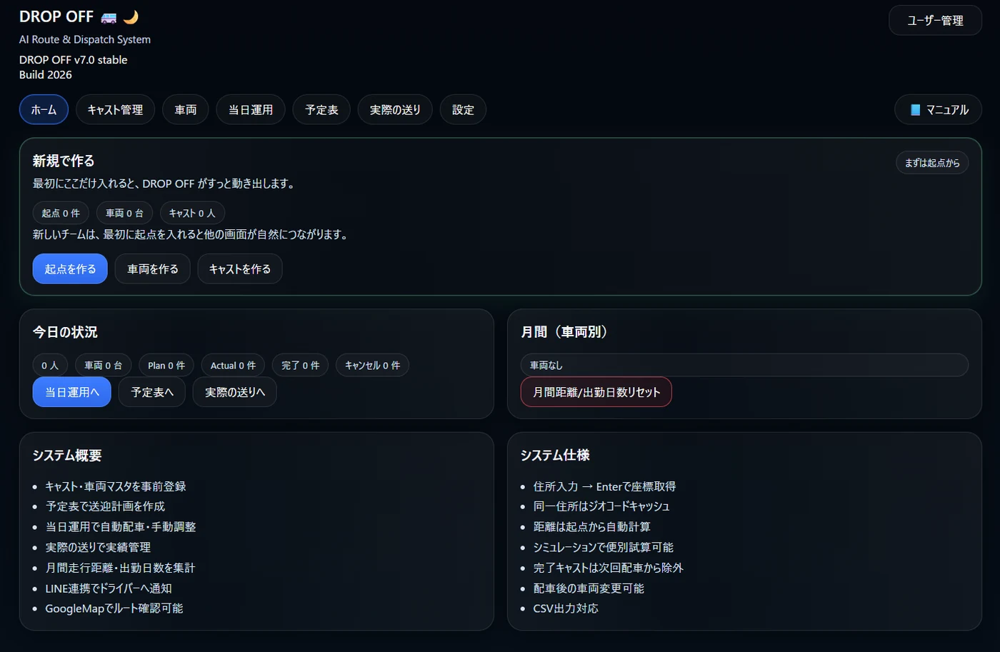
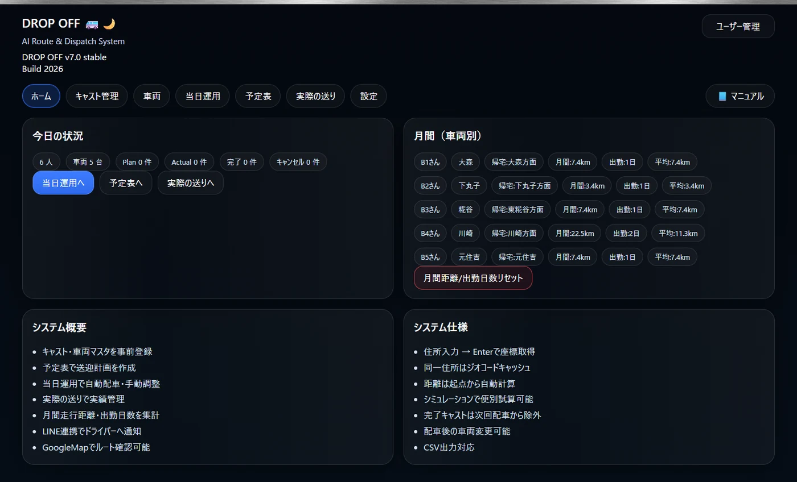
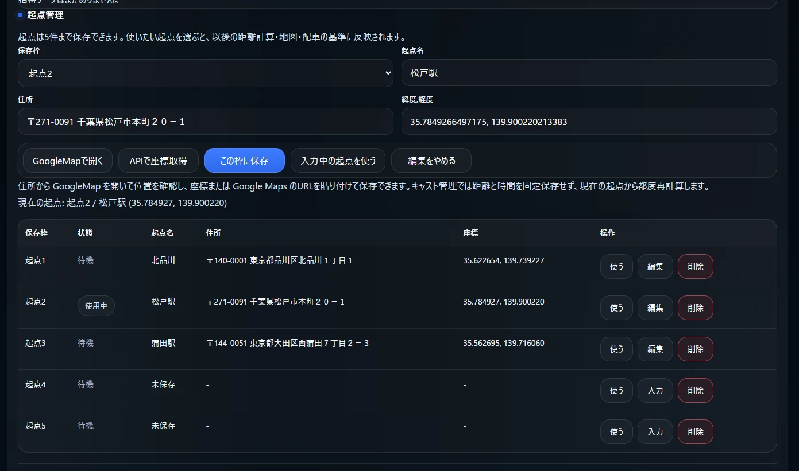
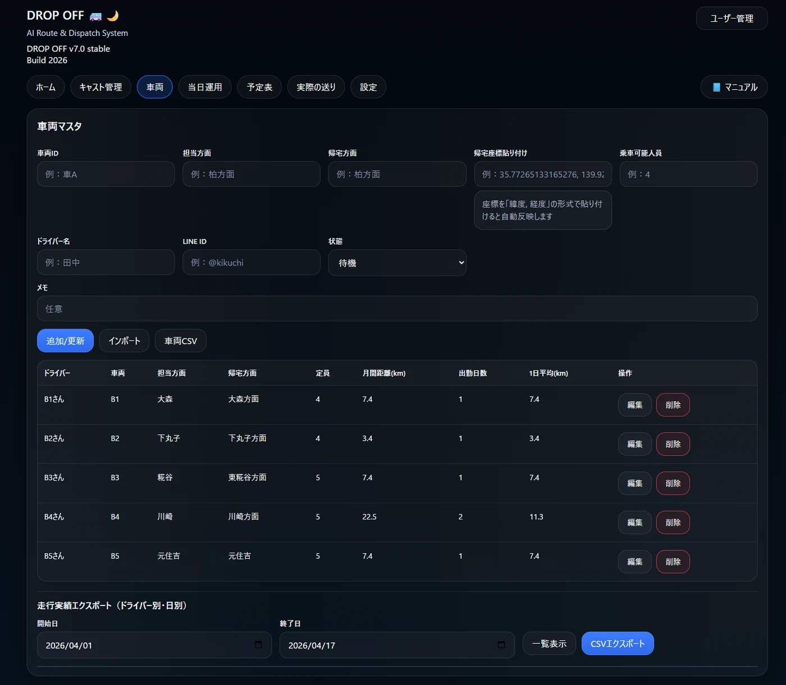
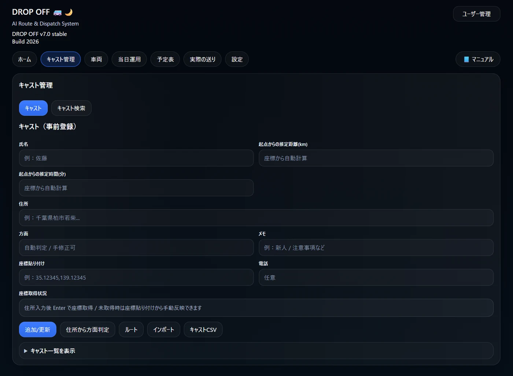
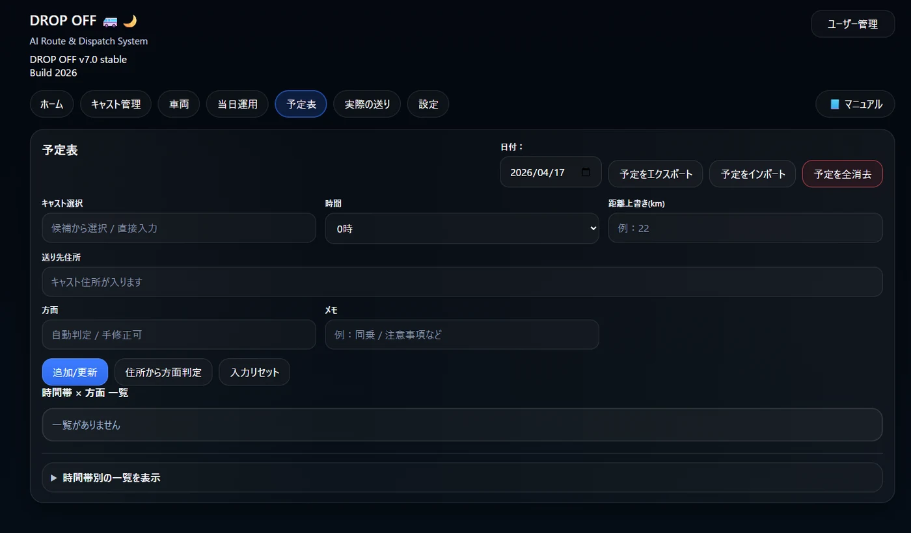
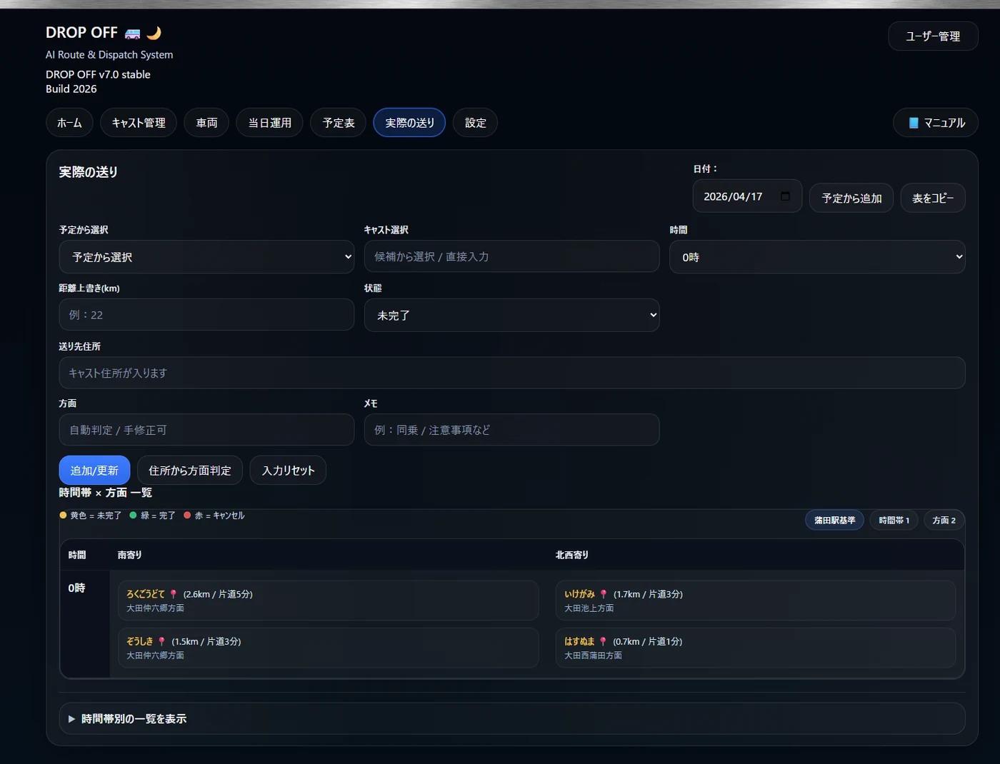
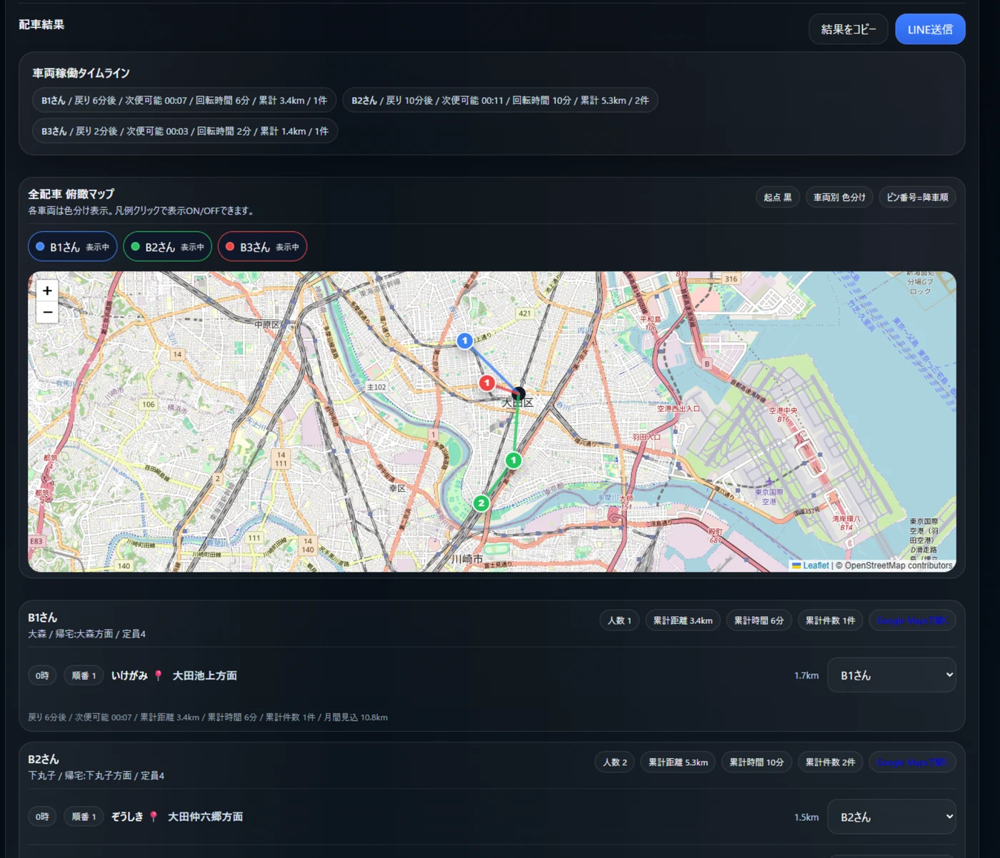
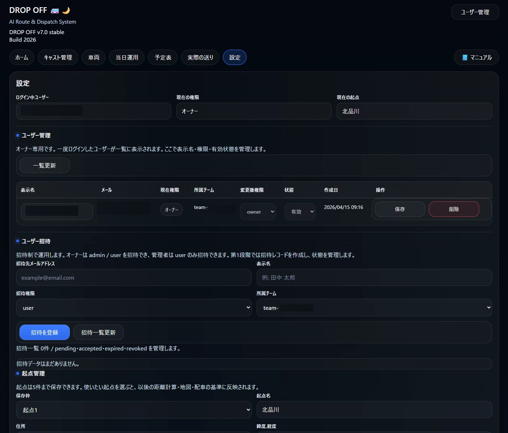

この画面でやること
- まず 起点を作る を押して、基準になる起点を登録します。
- 次に 車両を作る で配車に使う車両を登録します。
- 最後に 送り先を作る で送り先を登録します。
起点0件なら最優先
初期構築の入口
他画面へ自然につながる

新規登録直後は、ホーム中央の「新規で作る」カードが案内役になります。
DROP OFF の基本操作を、今の画面構成に合わせて整理しています。PDFではなくブラウザでそのまま見られます。 新規登録直後の流れから、予定表、実際の送り、自動配車結果、設定までを順番に確認できます。
新しいチームを作成した直後は、必要な基本データがまだ空です。ここで初期登録を進めます。

日々の入口になる画面です。今日の件数と、車両ごとの月間距離・出勤日数・1日平均を確認できます。

使う起点を選ぶと、その後の距離計算・地図・配車の基準が切り替わります。保存できる起点数は free で1件、Paid で5件です。

自動配車で使う車両情報を登録する画面です。配車後の月間距離や出勤日数の確認にも使います。

名前、住所、座標、メモ、電話などを登録できます。距離と時間は、現在の起点を基準に都度再計算されます。新規の空フォームでは距離と時間は表示されません。

予定表は、当日の計画を先に作っておく画面です。あとから実際の送りへ引き継げます。

実運用で使う画面です。予定表から取り込む方法と、その場で直接登録する方法の両方に対応しています。

自動配車を実行したあとに表示される結果画面です。車両別の配車順、累計距離、戻り時間、次便可能時刻などを確認できます。

設定では、現在のログイン情報と権限確認、ユーザー招待、所属チーム情報の確認などを行えます。
